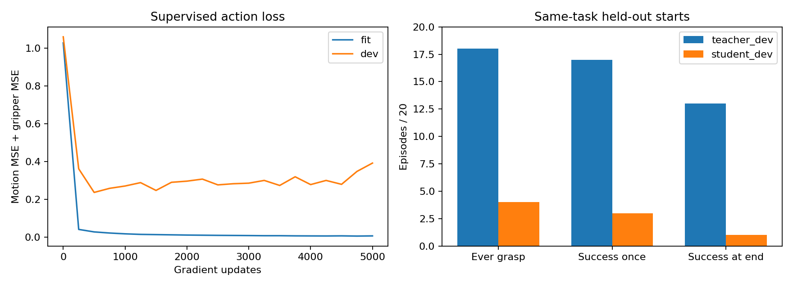

工程门槛：未通过 · 学生曾抓取 4/20 · 曾完整成功 3/20 · 结束完整成功 1/20
示例按固定规则选择，包含可用的第一例成功和第一例失败。下面的表格提供全部 20 对视频。

| 序号 | 种子 | 起点编号 | 教师 | 训练后的学生 |
|---|---|---|---|---|
| 1 | 1210080 | 26 | 抓取 1 / 曾成功 1 / 结束成功 1 教师完整视频 | 抓取 0 / 曾成功 0 / 结束成功 0 学生完整视频 |
| 2 | 1210081 | 88 | 抓取 1 / 曾成功 1 / 结束成功 0 教师完整视频 | 抓取 0 / 曾成功 0 / 结束成功 0 学生完整视频 |
| 3 | 1210082 | 84 | 抓取 1 / 曾成功 1 / 结束成功 1 教师完整视频 | 抓取 0 / 曾成功 0 / 结束成功 0 学生完整视频 |
| 4 | 1210083 | 46 | 抓取 1 / 曾成功 1 / 结束成功 0 教师完整视频 | 抓取 0 / 曾成功 0 / 结束成功 0 学生完整视频 |
| 5 | 1210084 | 53 | 抓取 1 / 曾成功 1 / 结束成功 1 教师完整视频 | 抓取 0 / 曾成功 0 / 结束成功 0 学生完整视频 |
| 6 | 1210085 | 52 | 抓取 1 / 曾成功 0 / 结束成功 0 教师完整视频 | 抓取 0 / 曾成功 0 / 结束成功 0 学生完整视频 |
| 7 | 1210086 | 95 | 抓取 1 / 曾成功 1 / 结束成功 1 教师完整视频 | 抓取 1 / 曾成功 1 / 结束成功 0 学生完整视频 |
| 8 | 1210087 | 80 | 抓取 1 / 曾成功 1 / 结束成功 1 教师完整视频 | 抓取 0 / 曾成功 0 / 结束成功 0 学生完整视频 |
| 9 | 1210088 | 78 | 抓取 1 / 曾成功 1 / 结束成功 1 教师完整视频 | 抓取 0 / 曾成功 0 / 结束成功 0 学生完整视频 |
| 10 | 1210089 | 33 | 抓取 0 / 曾成功 0 / 结束成功 0 教师完整视频 | 抓取 0 / 曾成功 0 / 结束成功 0 学生完整视频 |
| 11 | 1210090 | 23 | 抓取 0 / 曾成功 0 / 结束成功 0 教师完整视频 | 抓取 0 / 曾成功 0 / 结束成功 0 学生完整视频 |
| 12 | 1210091 | 64 | 抓取 1 / 曾成功 1 / 结束成功 1 教师完整视频 | 抓取 0 / 曾成功 0 / 结束成功 0 学生完整视频 |
| 13 | 1210092 | 42 | 抓取 1 / 曾成功 1 / 结束成功 0 教师完整视频 | 抓取 0 / 曾成功 0 / 结束成功 0 学生完整视频 |
| 14 | 1210093 | 73 | 抓取 1 / 曾成功 1 / 结束成功 1 教师完整视频 | 抓取 1 / 曾成功 0 / 结束成功 0 学生完整视频 |
| 15 | 1210094 | 30 | 抓取 1 / 曾成功 1 / 结束成功 1 教师完整视频 | 抓取 1 / 曾成功 1 / 结束成功 1 学生完整视频 |
| 16 | 1210095 | 98 | 抓取 1 / 曾成功 1 / 结束成功 1 教师完整视频 | 抓取 0 / 曾成功 0 / 结束成功 0 学生完整视频 |
| 17 | 1210096 | 61 | 抓取 1 / 曾成功 1 / 结束成功 1 教师完整视频 | 抓取 0 / 曾成功 0 / 结束成功 0 学生完整视频 |
| 18 | 1210097 | 51 | 抓取 1 / 曾成功 1 / 结束成功 0 教师完整视频 | 抓取 1 / 曾成功 1 / 结束成功 0 学生完整视频 |
| 19 | 1210098 | 24 | 抓取 1 / 曾成功 1 / 结束成功 1 教师完整视频 | 抓取 0 / 曾成功 0 / 结束成功 0 学生完整视频 |
| 20 | 1210099 | 93 | 抓取 1 / 曾成功 1 / 结束成功 1 教师完整视频 | 抓取 0 / 曾成功 0 / 结束成功 0 学生完整视频 |